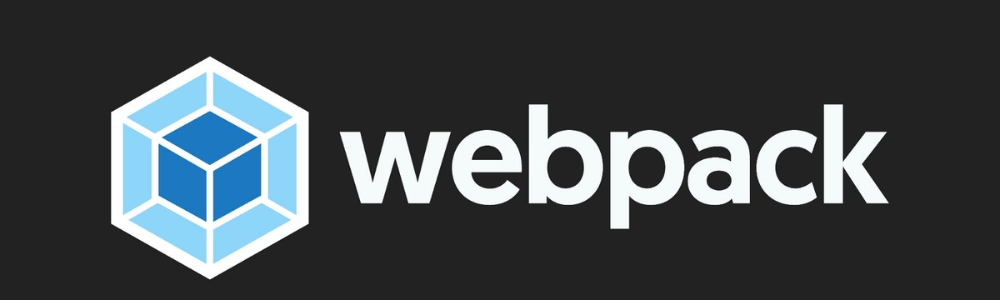

Как настроить Webpack 4
Webpack 4 со своим появлением на свет получил массовое обновление.
Что же в нем нового? Массовое повышение производительности, нулевая конфигурация и нормальные значения по умолчанию.
webpack 4 создание бандла по умолчанию
webpack является мощным инструментом разработки, он имеет множество уникальных функций, но его недостатком является сложный для понимания файл конфигурации.
Наличие файла конфигурации для веб-проекта имеет большого значения в средних и крупных проектах. Вы просто не сможете жить без него. Тем не менее, для небольших проектов настройка отдельного файла конфигурации раздражает, особенно если вы хотите запустить какое-нибудь игрушечное приложение.
Возможно именно этим обусловлена ростущая популярность такого сборщика проектов как Parcel.
Однако с выходом 4-ой версии Webpack систуация изменилась, теперь по усмолчанию файл конфигурации не требуется.
Давайте это проверим!
webpack 4 пробуем сборку с нулевой конфигурацией
Создайте новый каталог и перейдите в него:
mkdir webpack-4-quickstart && cd $_Инициализируйте package.json, выполнив:
npm init -yУстановим Webpack 4
npm i webpack --save-devТеперь откроем package.json и добавим команду для сборки проекта:
"scripts": {
"build": "webpack"
}Попробуйте запустить сборку командой:
npm run buildСмотрим, что получилось:
ERROR in Entry module not found: Error: Can't resolve './src' in '~/webpack-4-quickstart'webpack 4 ищет точку входа в папке "./src". Точка входа - это файл, который ищет webpack, чтобы начать сборку вашего Javascript.
В предыдущих версиях webpack точка входа должна была определяться внутри файла конфигурации с именем "webpack.config.js".
Начиная с webpack 4 нет необходимости определять точку входа: ей по умолчанию является файл по адресу - "./src/index.js".
Протестировать новую функцию легко. Создадим файл "./src/index.js", со следующим содержимым:
console.log(`Это простейшая точка входа`);и снова запустим сборку:
npm run buildВ результате будет сгенерирован готовый бандл по адресу ~/dist/main.js.
Как видите в webpack 4 нет необходимости определять ни точку входа, ни выходной файл.
Итак, вот первая новость: webpack 4 не нужен файл конфигурации.
Он будет по умолчанию искать точку входа в ./src/index.js.
Более того, он будет создавать итоговый пакет в ./dist/main.js.
Далее узнаете о еще одной приятной особенности webpack 4: режимы production и development.
webpack 4: production и development режимы
Наличие сразу двух конфигов является нормальной практикой при использовании webpack.
Типичный проект на webpack может иметь:
- конфигурационный файл для разработки, например запускающий "webpack dev server" и другие вспомогательные инструменты.
- конфигурационный файл для продакшена, запускающий минификацию и углификацию кода, создание sourcemaps и т.д.
В то время как для прежних проектов все еще могут потребоваться 2 файла, в Webpack 4 вы можете обойтись без единой строчки конфигурации.
Как так?
В Webpack 4 уже встроены режимы "development" и "production".
Откройте файл "package.json" и заполните раздел скрипта следующим образом:
"scripts": {
"dev": "webpack --mode development",
"build": "webpack --mode production"
}Теперь попробуйте запустить:
npm run devи посмотрите на файл ./dist/main.js. Что вы там видите? Да, я знаю, обычный бандл… не минифицированный!
Теперь попробуйте запустить:
npm run buildи посмотрите на ./dist/main.js. Что вы видите сейчас? Минифицированнный бандл!
Да!
"Production режим" включает в себя все виды оптимизвции кода, прямо из коробки.
"Режим Development", с другой стороны, настроен на максимальную скорость сборки и делает не что иное, как предоставляет не минимизированный пакет.
Итак, вот вторая новость: Webpack 4 предоставляет режимы "production" и "development".
В webpack 4 вы можете обойтись без единой строчки конфигурации! Просто определите флаг --mode, в файле "package.json" и вы получите все из коробки!